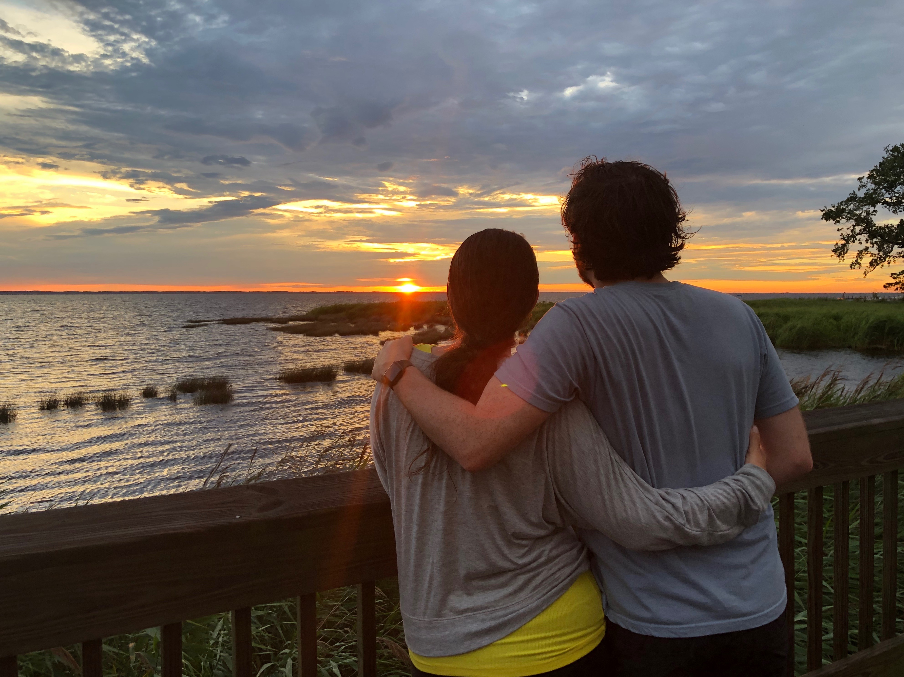

Our Wedding:
Our wedding will be held on June 20th 2020 in the town of Duck located in the Outer Banks of North Carolina. We chose the Outer Banks for several reasons including its gorgeous beaches, picturesque sunsets, and beautiful lighthouses. These qualities make the Outer Banks a lovely destination for a wedding or any family vacation.
The Outer Banks holds a special place for both of us as we have both spent numerous summers vacationing there with our families both before and after we started dating.
The Outer Banks has so much more to offer than can be seen in one weekend. There are many great outdoor activities available on the island such as kayaking and paddle boarding, parasailing, fishing, hiking, or even just relaxing on the beach or by the pool with a drink in your hand. (It is legal to drink on the beach in the Outer Banks. A huge plus.) The Outer Banks has a rich history with many historical sites to learn about and explore from the numerous lighthouses to the Wright Brothers Memorial and Museum and many places in between.

Lovers of nature will appreciate photographing the birds of Pea Island National Wildlife Refuge, the famous wild horses of Corova Beach, or the skittish Atlantic Ghost Crabs which overtake the beaches by night.

We encourage all of our guests to explore the island outside of our wedding day. There are a number of vacation rental homes and hotels available in and around Duck for any budget.
We have blocked hotel rooms at the Hampton Inn Corolla and the Baymont by Wyndham. If you are planning to stay for the whole week, the Outer Banks also offers a number of vacation properties for rent. Keep in mind the Outer Banks is a big island so make sure you look for accommodations near the towns of Corolla, Duck, and Southern Shores.